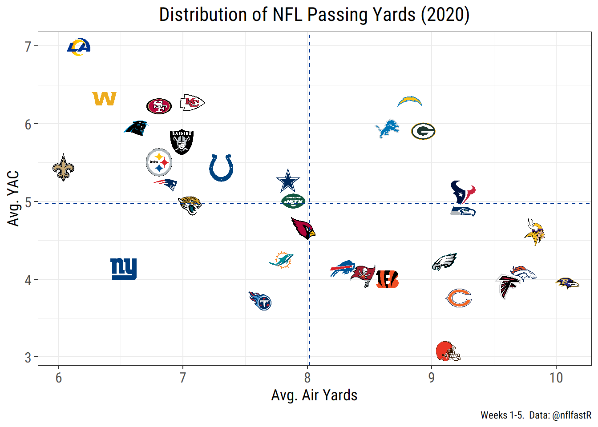

This is my first post on this site, which I created to practice R and learn about some of my favorite topics. With the beginning of the 2020 NFL season, my initial focus is sports analytics, with a focus on my favorite team, the LA Rams. I’m new to football analytics, so I’m looking forward to learning about the field as I go and will hopefully stumble onto some interesting insights along the way.
The Rams entered the 2020 season with a lot of question marks, but perhaps the biggest was Jared Goff. Quarterback play is essential to modern NFL teams. According to nflfastR data, the average passing play through five weeks in 2020 has gained 6.6 yards, while the average run has gained just 4.5, an efficiency advantage of almost 50%. In particular, the Rams just jettisoned former All-Pro running back Todd Gurley, further increasing the load on Goff’s shoulders after signing a then-record $134 million contract extension in 2019. The Rams can’t return to their 2018 success without Goff playing well, so his play is a great place to start.
Heading into the season, I believed that Goff could be an above-average quarterback in a successful system, but struggles to create opportunities himself when in difficult situations. My opinion hasn’t changed much through the first five weeks of the season. At 4-1, the Rams have played fairly well against mostly weak competition, and Goff himself has been productive in their successful offensive scheme. He’s played well behind a strong offensive line and avoided making major mistakes while getting the ball to his talented receiving core. He definitely looks improved from his 2019 campaign, which saw the Rams miss the playoffs, but what’s different so far this year?
A good start to understanding how Goff’s play has changed this year is seeing how his high-level stats have varied throughout this career. Before starting the analysis, the first step is to import the data I’ll be using. In this and future posts, I expect the main data source I’ll use will by play-by-play data available through the nflfastR package. This is a fantastic data source, and I doubt I would have decided to make these posts without it. I’ll also supplement with some data from the NFL’s Next Gen Stats (NGS), conveniently scraped and available on Github from mrcaseb. To get started with this analysis, I imported all data from both sources for the years Goff has been active in the league.
library(tidyverse)## -- Attaching packages ------------------------------------------------------------ tidyverse 1.3.0 --## v ggplot2 3.3.2 v purrr 0.3.4
## v tibble 3.0.3 v dplyr 1.0.2
## v tidyr 1.1.2 v stringr 1.4.0
## v readr 1.4.0 v forcats 0.5.0## -- Conflicts --------------------------------------------------------------- tidyverse_conflicts() --
## x dplyr::filter() masks stats::filter()
## x dplyr::lag() masks stats::lag()options(dplyr.summarise.inform = FALSE)
library(nflfastR)
library(here)## here() starts at C:/Users/natha/Documents/natebean-sitecareer <- c(2016:2020)
passing_pbp <- map_df(career, function(x) {
readRDS(url(
paste0("https://raw.githubusercontent.com/guga31bb/nflfastR-data/master/data/play_by_play_", x, ".rds")
)) %>%
mutate(year = x)
}) %>%
filter(
week <= 5,
play_type == "pass",
qb_kneel == "0",
qb_spike == "0"
)
ngs_data <- map_df(career, function(x) {
readRDS(here("content", "post", "Post1_Goff Passing", "Data", paste0("ngs_", x, "_passing.rds")))
})library(reactable)
library(htmltools)
# can we add colors?
ngs_goff <- ngs_data %>%
filter(week == 0) %>%
select(
player_last_name, season, pass_yards:passer_rating, completion_percentage,
completion_percentage_above_expectation
) %>%
mutate(
`Comp %` = round(completion_percentage, digits = 1),
Yds = pass_yards,
TD = pass_touchdowns,
Int = interceptions,
CPOE = round(completion_percentage_above_expectation, digits = 1),
QBR = round(passer_rating, digits = 1),
.keep = "unused"
) %>%
group_by(season) %>%
arrange(desc(QBR)) %>%
mutate(qbr_rank = row_number()) %>%
arrange(desc(CPOE)) %>%
mutate(cpoe_rank = row_number()) %>%
filter(player_last_name == "Goff") %>%
mutate(
QBR = paste0(QBR, " ", "(", qbr_rank, ")"),
CPOE = paste0(CPOE, " ", "(", cpoe_rank, ")")
) %>%
select(-qbr_rank, -cpoe_rank)
passing_pbp %>%
filter(season_type == "REG") %>%
select(year, passer_player_name, epa, complete_pass, incomplete_pass, interception, touchdown) %>%
group_by(passer_player_name, year) %>%
mutate(
touchdown = ifelse(interception == 1, 0, touchdown), # pick 6's count as td's in this data
attempts = sum(c_across(complete_pass:touchdown))
) %>%
filter(attempts >= 128) %>%
summarise(epa = round(mean(epa), digits = 2)) %>%
group_by(year) %>%
arrange(desc(epa)) %>%
mutate(epa_rank = row_number()) %>%
filter(passer_player_name == "J.Goff") %>%
inner_join(ngs_goff, by = c("year" = "season")) %>%
mutate(
epa = paste0(epa, " ", "(", epa_rank, ")"),
`TD/Int` = round(TD / Int, digits = 1)
) %>%
select(Year = year, Player = passer_player_name, `Comp %`, `TD/Int`, CPOE, QBR, `EPA/Play` = epa) %>%
arrange(Year) %>%
reactable(outlined = TRUE, striped = TRUE, highlight = TRUE, columns = list(
Player = colDef(cell = function(value) {
image <- img(src = sprintf("images/%s.jpg", value), height = "24px", alt = value)
tagList(
div(style = list(display = "inline-block", width = "45px"), image),
value
)
})
))This data allows us to take a look at some of Goff’s most important stats since entering the league in 2016. All of the data in the table below is originally from NGS, besides average expected points added (EPA) per passing play, which was calculated using play-by-play data. Key stats from NGS include Goff’s completion percentage, touchdown to interception ratio, completion percentage over expected (CPOE), and quarterback rating (QBR).
2016 was Goff’s worst season across all stats shown, not surprising given his 0-7 record as a starter for a floundering Rams team. While his stats picked up immediately with the arrival of Sean McVay, Goff has so far recorded his best stats in nearly all of the these measures in 2020. The table also shows how Goff ranks among NFL quarterbacks with at least 128 attempts in CPOE, QBR, and EPA/play. He’s never ranked highly in CPOE according to the NGS model, but has fared much better in QBR and EPA/play. In 2020, he ranks 11th in QBR and 5th in EPA/play. His relatively higher ranking in these two measures gives some insight into the reasons for his success. Goff hasn’t performed much above expectations for completed passes, so these stats suggest his success has come from other elements of the scheme, and avoiding turnovers and sacks.
# is completion already here somewhere?
goff_passing <- passing_pbp %>%
filter(
passer_player_name == "J.Goff",
season_type == "REG",
sack == "0"
) %>%
mutate(
completion = ifelse(incomplete_pass == 0, 1, 0),
target_percent = 1 / n()
) %>%
select(week, year, down, completion, yards_gained, yards_after_catch, air_yards, pass_length, qb_epa, receiver_player_name, receiver_jersey_number, cp, cpoe, penalty, touchdown, interception, qb_hit, success, target_percent)Now that we’ve taken a look at Goff’s overall stats through week five, it’s useful to take a deeper dive into the factors that could explain some of his success this year. There’s a ton of possibilities to explore, and his success certainly stems from multiple changes, but the biggest difference that I’ve seen this year has been the Rams reliance on short passing. At least from my viewing experience, Goff has relied much more frequently on short passes and yards after catch (YAC) from his receivers. The lack of deep balls from Goff has been highlighted by many others as well. Most of the remainder of this post will be dedicated to understanding how Goff has changed his pass selection, and how that compares to other teams. First, it will help to confirm what I already suspect is true by comparing the Rams reliance on short passing to the rest of the league. The code below creates a figure that shows the relationship between YAC and air yards (the distance beyond the line of scrimmage the ball travels in the air) across the league.
library(ggimage)
library(teamcolors)
library(extrafont)## Registering fonts with R# make sure the avgs are current with incompletions
team_logos <- teams_colors_logos %>% select(team_abbr, team_logo_espn)
passing_pbp %>%
filter(year == 2020) %>%
select(posteam, air_yards, yards_after_catch, yards_gained, passer_player_name) %>%
group_by(posteam) %>%
summarise(
air_yards = mean(air_yards, na.rm = TRUE),
yards_after_catch = mean(yards_after_catch, na.rm = TRUE)
) %>%
inner_join(team_logos, by = c("posteam" = "team_abbr")) %>%
ggplot(aes(x = air_yards, y = yards_after_catch)) +
geom_image(aes(image = team_logo_espn), size = 0.05, asp = 16 / 9) +
geom_hline(aes(yintercept = mean(yards_after_catch)), color = "#003594", linetype = "dashed") +
geom_vline(aes(xintercept = mean(air_yards)), color = "#003594", linetype = "dashed") +
theme_bw() +
labs(
x = "Avg. Air Yards",
y = "Avg. YAC",
title = "Distribution of NFL Passing Yards (2020)",
caption = "Weeks 1-5. Data: @nflfastR"
) +
theme(
text = element_text(family = "Roboto Condensed"),
plot.title = element_text(hjust = 0.5, size = 16),
plot.subtitle = element_text(size = 12),
axis.title = element_text(size = 13),
axis.text = element_text(size = 12),
legend.text = element_text(size = 12)
)
The figure above shows that there’s a general inverse relationship between a team’s average YAC and air yards. It offers a clear takeaway for the Rams: Goff is throwing extremely short passes and the team relies heavily on YAC. The Rams are getting an league high average of 7 YAC per pass (OR PASSING PLAY, FIGURE OUT), half a yard ahead of the next closest team. Meanwhile, they barely average over 6 air yards per pass (OR PASSING PLAY, FIGURE OUT). This is only higher than the Saints, which may be because Drew Brees cannot physically throw the football past the chains on first and 10. The evidence couldn’t be clearer: the Rams offense is built around YAC. But how similar was this to past years? The code below shows the breakdown between long and short completions throughout Goff’s career.
library(reactable)
library(htmltools)
passing_pbp %>%
filter(
passer_player_name == "J.Goff",
sack == 0,
season_type == "REG",
two_point_attempt == 0
) %>%
mutate(
IAY = air_yards,
air_yards = ifelse(incomplete_pass == 1 | interception == 1, NA, air_yards),
yards_gained = ifelse(incomplete_pass == 1 | interception == 1, NA, yards_gained)
) %>%
select(desc, Player = passer_player_name, yards_gained, air_yards, yards_after_catch, pass_length, Year = year, IAY) %>%
group_by(Year, Player) %>%
summarise(
Completions = n(),
`Avg. IAY` = round(mean(IAY), digits = 1),
`AY/C` = round(mean(air_yards, na.rm = TRUE), digits = 1),
`YAC/C` = round(mean(yards_after_catch, na.rm = TRUE), digits = 1),
`Yds/C` = round(mean(yards_gained, na.rm = TRUE), digits = 1)
) %>%
reactable(outlined = TRUE, striped = TRUE, highlight = TRUE, columns = list(
Player = colDef(cell = function(value) {
image <- img(src = sprintf("images/%s.jpg", value), height = "24px", alt = value)
tagList(
div(style = list(display = "inline-block", width = "45px"), image),
value
)
})
))Goff’s average air yards are shown two ways here: his intended air yards, his air yards from all of his passes, and air yards per completion, the number of his completed air yards. The table also shows the Rams YAC per completion and total yards per completion. Goff’s winless 7-game rookie season is an outlier, as all of the averages presented in this table were his lowest. Compared to his average over the previous three season, Goff’s completions about a yard shorter through the air, but are gaining about an extra yard after the catch. The biggest change is in his intended air yards though, which have declined 25% compared to average.
I also wanted to find if there have been changes to where on the field Goff has been throwing. In addition to pass yardage data, the data scraped through nflfastR also has indicators for whether the pass was thrown to the right, left, or middle. This isn’t as strong as data that more accurately positions passes inside those three zones, but could still be interesting. I had a lot of fun messing around with ggplot2 to create a nice facsimile of a football field below my scatter plot. I based my code of the code provided through Big Data Bowl (cite) and found an image via Google images to serve as the base for the endzone I created.
passes_2020 <- passing_pbp %>%
filter(
year >= 2019,
passer_player_name == "J.Goff",
sack == 0,
season_type == "REG",
two_point_attempt == 0
) %>%
mutate(
field_position = case_when(
pass_location == "left" ~ 15,
pass_location == "middle" ~ 30,
pass_location == "right" ~ 45
),
complete = ifelse(incomplete_pass == 0 & touchdown == 0, 1, 0),
air_yards = air_yards + 20
) %>% # adjustment for plot
select(incomplete_pass, interception, touchdown, air_yards, field_position, year) %>%
mutate(
result = case_when(
incomplete_pass == 0 & interception == 0 & touchdown == 0 ~ "Completion",
incomplete_pass == 1 ~ "Incompletion",
interception == 1 ~ "Interception",
touchdown == 1 ~ "Touchdown"
),
.keep = "unused"
)library(ggforce)
library(here)
result_colors <- c("#9ecae1", "#756bb1", "#c51b8a", "#fec44f")
endzone <- data.frame(
x = 160 / 3 / 2,
y = 115,
image = sample(here("content", "post", "Post1_Goff Passing", "Images", "rams_endzone.png"))
)
opp_endzone <- data.frame(
x = 160 / 3 / 2,
y = 5,
image = sample(here("content", "post", "Post1_Goff Passing", "Images", "opposite_end.png"))
)
yard_markers <- data.frame(
x = c(rep(0, 13)),
y = c(seq(0, 120, by = 10)),
xend = c(rep(160 / 3, 13)),
yend = c(seq(0, 120, by = 10))
)
sidelines <- data.frame(
x = c(0, 160 / 3),
y = c(0, 0),
xend = c(0, 160 / 3),
yend = c(120, 120)
)
hash_right <- 38.35
hash_left <- 12
hash_width <- 50
hash <- expand.grid(x = c(0, 23.36667, 29.96667, 53.3), y = (10:110))
ggplot() +
ylim(0, 120) +
xlim(0, ((160 / 3))) +
geom_segment(data = sidelines[1, 1:4], mapping = aes(x = x, y = y, xend = xend, yend = yend), color = "white") +
geom_segment(data = sidelines[2, 1:4], mapping = aes(x = x, y = y, xend = xend, yend = yend), color = "white") +
geom_segment(data = yard_markers, aes(x = x, y = y, xend = xend, yend = yend), color = "White") +
geom_image(endzone, mapping = aes(x, y, image = image), size = 0.9) +
geom_image(opp_endzone, mapping = aes(x, y, image = image), size = 0.9) +
theme_void() +
labs(
color = "",
title = "Jared Goff's Pass Distribution"
) +
scale_color_manual(values = result_colors) +
annotate("text",
x = hash$x[hash$x < 55 / 2],
y = hash$y[hash$x < 55 / 2], label = "_", hjust = 0, vjust = -0.2, color = "white"
) +
annotate("text",
x = hash$x[hash$x > 55 / 2],
y = hash$y[hash$x > 55 / 2], label = "_", hjust = 1, vjust = -0.2, color = "white"
) +
geom_jitter(passes_2020, mapping = aes(x = field_position, y = air_yards, col = passes_2020$result)) +
theme(
panel.background = element_rect(fill = "#61bd4f"),
text = element_text(family = "Roboto Condensed"),
plot.title = element_text(hjust = 0.5, size = 18),
strip.text = element_text(size = 14),
legend.position = "bottom",
legend.text = element_text(size = 12)
) +
facet_wrap(~year)Again, it should be noted that while the vertical distance is accurate the horizontal distance shown in the figure above is not. The data provides some information on horizontal pass location- left, middle, or right- but I created the variation within those three categories to make the figure more interesting.
There are many additional data points that could shed some light on how Goff’s short passing game is working in 2020, but the rest of this post will focus on the role of the running backs in the passing game. In previous years, Gurley played a big role in the passing offense, and seemed effective at turning short, safe passes into big gains with YAC. This year, the Rams have been pivoted to a rb by committee system with Cam Akers, Monte Henderson, and Malcolm Brown (side note: the trio has XXX years through five games, more than the Rams in any year with Gurley as the lead back). Based on my viewing experience, these three have been notably absent in the passing game compared to backs in previous seasons, but is this true?
# add line of scrimmage
# adjust yards as a result
rb_passes <- goff_passing %>%
filter(receiver_jersey_number >= 20 & receiver_jersey_number < 50)
rb_passes %>%
rename(Player = receiver_player_name) %>%
mutate(
Player = ifelse(year < 2020 & Player != "T.Gurley", "Others", Player),
weeks = ifelse(year == 2020, 5, 16)
) %>%
group_by(year, Player) %>%
summarise(
Rec = sum(completion),
`Yds/Rec` = round(sum(yards_gained) / Rec, digits = 1),
`Target %` = round(sum(target_percent) * 100, digits = 1),
TDs = sum(touchdown),
Success = round(sum(success) / n() * 100, digits = 0)
) %>%
arrange(year, desc(Rec)) %>%
filter(Player != "C.Akers") %>%
reactable(
outlined = TRUE, striped = TRUE, highlight = TRUE,
columns = list(
Success = colDef(name = "Success Rate", align = "left", cell = function(value) {
width <- paste0(value, "%")
bar_chart(value, width = width, fill = "#003594", background = "#e1e1e1")
}),
year = colDef(name = "Year"),
Player = colDef(
cell = function(value) {
image <- img(src = sprintf("images/%s.jpg", value), height = "24px", alt = value)
tagList(
div(style = list(display = "inline-block", width = "45px"), image), value
)
},
minWidth = 120
)
)
)Of course the Rams running backs have fewer receptions through five games than Gurley did throughout the entirety of previous seasons, but the table also shows that running backs are getting a lower target share from Goff than Gurley during the years he was healthy, when he averaged between 4 and 5 percent of targets. Another key stat here is success rate, defined as the percentage of receptions that result in positive expected points added (EPA). In this case, EPA also takes incompletions to each target into account. The overall production of the 2020 running backs is still too low to meaningfully compare their success with previous years, although a notable finding is that Gurley doesn’t have a significantly higher success rate than other running backs during previous seasons. He did however have greater average yards per catch, possibly suggesting some big plays are driving that average up.
The lessened role in the passing game may simply be due to the loss of the talented Gurley. Without a player of this caliber, the offense is designed to work through other options now. However, the loss of Gurley doesn’t appear to be the end of the world, as the success rate for passes to Rams running backs in the pass game has generally been lower than their overall average pf 50.2% since 2017.
Overall, it will be interesting to see how the Rams passing game evolves throughout the season. Will Goff start throwing more deep balls as opposing defenses adjust to the Rams YAC-heavy pass game? Either way, for now Goff and the Rams offense is off the a great start to 2020. If they can maintain their success as divisional play begins this week against the 49ers, they’ll be in a good position to make another post-season run.
This post just scratches the surface of the analysis that can be with nflfastR and other data sources and I plan to explore a lot more about the Rams passing game and other NFL topics in the future. This is just an initial exploration into trends in Goff’s 2020 passing game. There’s a ton more we can do with the available data, and plenty of posts to come. Topics I’m interested about looking at in the future include:
there are a bunch of links at the end of article. remove
{kind=link}